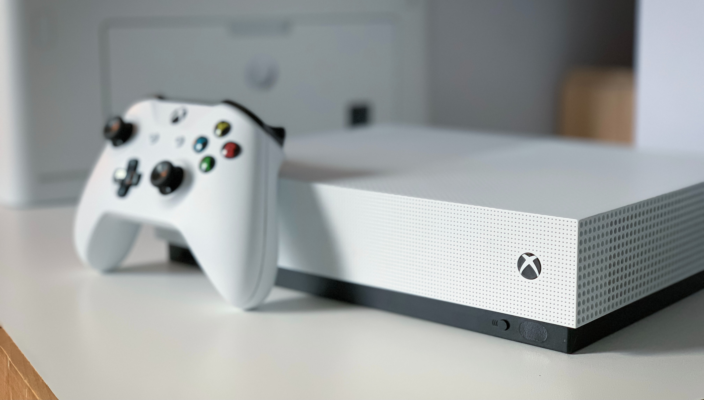

Martin Katler on Unsplash >
Martin Katler on Unsplash >
PlayStation pros and cons: The Sony PlayStation 5 is a behemoth of a gaming system, while currently, the prices for the console have skyrocketed due to external forces such as shipping issues, scalpers and more. If you can buy one at a decent price, this is a true force to be reckoned with. Both versions, the standard and digital have the same amount of graphical, audio, and performance power (which can’t be said for Xbox). Another thing to consider are the exclusive games that each company brings to the table. While Nintendo has pretty much definitively the edge over both companies due to having so many games made “in-house”. PlayStation and Xbox both also have some serious contenders. The pros to the PlayStation exclusives are that they have a lot of good single player story games in their collection, some older ones include series like Uncharted, The Last of Us, Rachet and Clank, Spiderman, and others gives you hundreds of hours of play time in their single player worlds. And while both receive love from companies with franchises like Call of Duty, Battlefield, Star Wars Battlefront, and more. If you’re looking for single player games, PlayStation has it over Xbox by a longshot.
Louis-Philippe Poitras on Unsplash >While Xbox has its flaws when it comes to certain aspects of the so-called “Console Wars” it is by no means a clean sweep for PlayStation. While both versions available for the PlayStation have the same power, the extra $100 saved totaling to $200 less than its “Standard” counterpart do not take it out of the running, while its power and graphical abilities are less than the others, if it is not something that you worry about and just want to play games for a lower price, this is a great buy. The Xbox also has its fair share of games, and while I would say that PlayStation wins in the category of Single-Player story games. Xbox has quite the grip of Multiplayer experiences. Games like Halo and Forza are top competitors for First Person Shooters and Racing Games, and with Xbox’s Game Pass, you have access to hundreds of games for free for a subscription fee each month. PlayStation does have one of these as well, but the games included on the game pass by Xbox value to a total MUCH higher than PlayStations. As well as totaling to be cheaper than PlayStations similar deals.